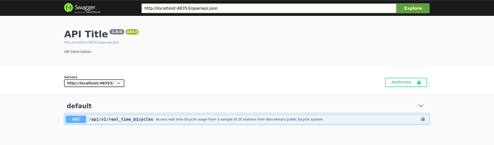
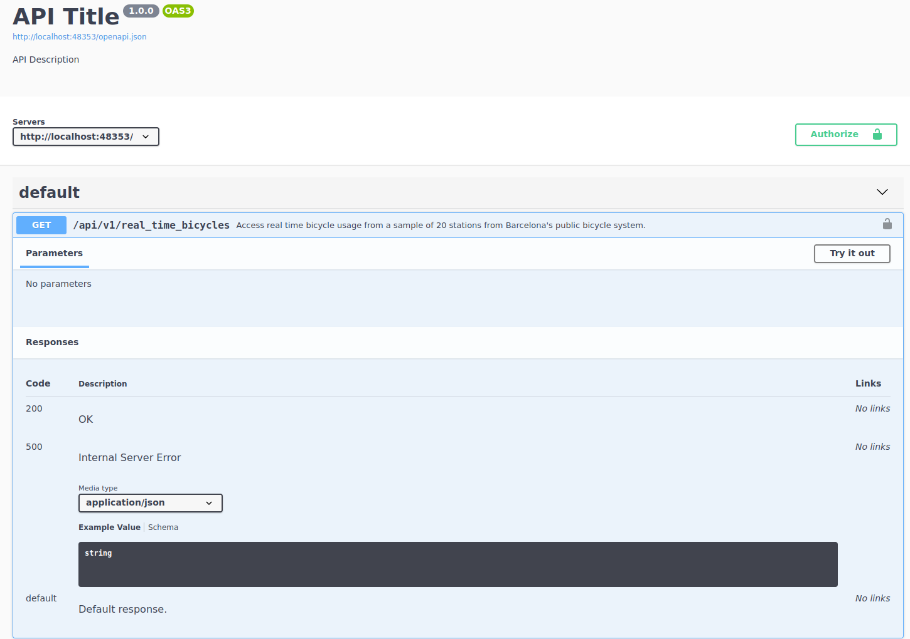
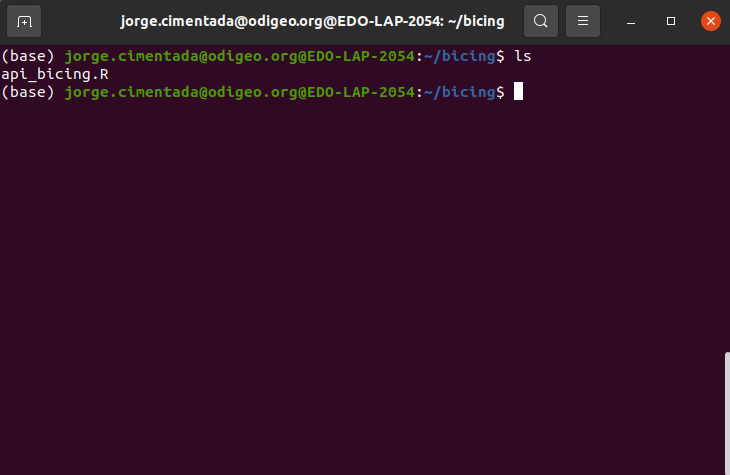
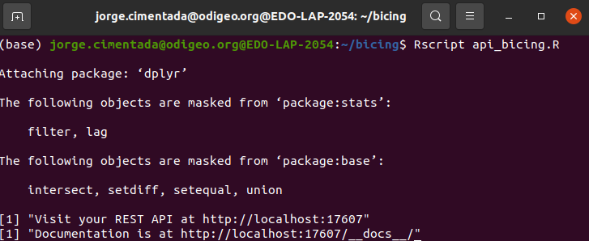
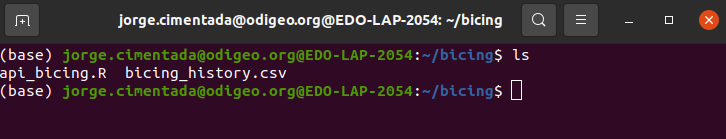
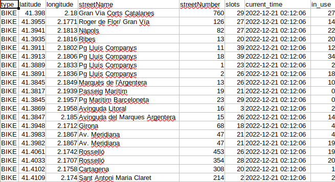
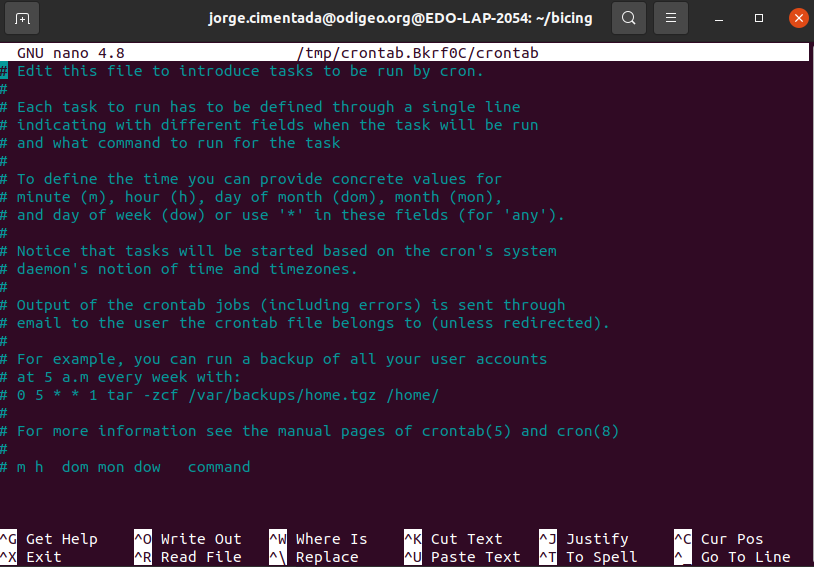
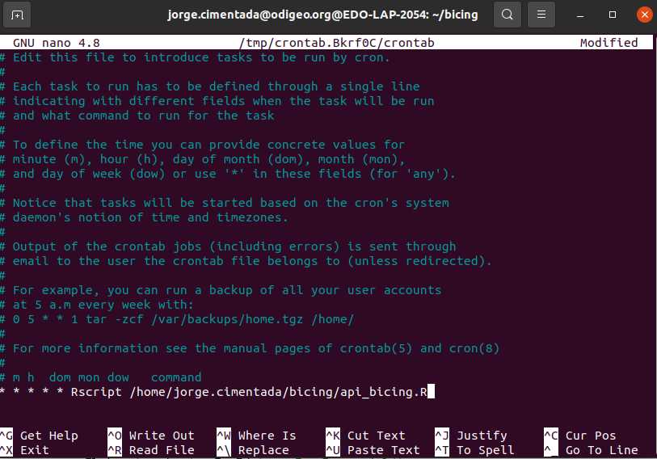
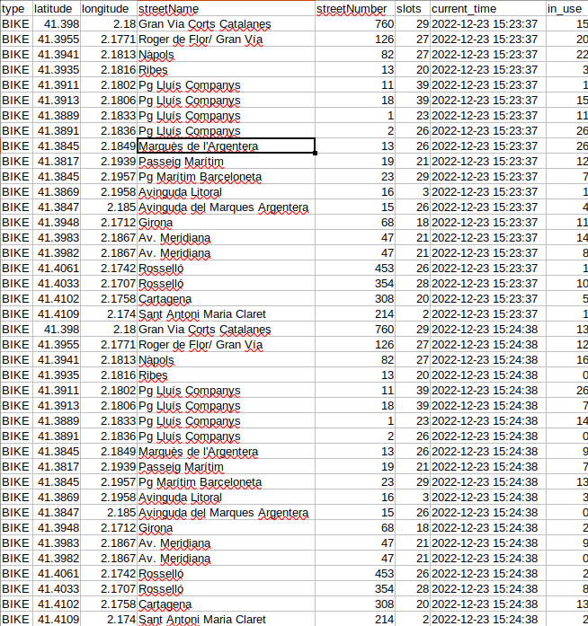

library(scrapex)
library(httr2)
library(dplyr)
library(readr)
library(here)
bicing <- api_bicing()[1] "Visit your REST API at http://localhost:43260"
[1] "Documentation is at http://localhost:43260/__docs__/"Grabbing data from APIs can be achieved with all of the techniques we’ve covered in the book so far. However, as is the case with web scraping, data is ephemeral. If you’re interested in web scraping some temperature data for your city on a website, the temperature from 6 months ago for a given neighborhood might not be available anymore. That’s why it’s very common for web scraping or API scripts to be automated.
Let me tell you a brief story that motivates this chapter. Throughout my PhD studies I was living in Barcelona where I used to take a bike ride from my house to my university. As is common in Barcelona, I used the public bicycle system called “Bicing”. Every day, I took the bike from the upper part of the city, riding down the city to the campus that was next to the beach. Whenever the day was coming to an end, I took the bike up again to the upper part of the city.
Although that sounds very pleasant, every day when I tried to find a bike, there were no bikes available at the stations. This happened both in the upper part of the city as well as at the stations close to my university. I used to waste up to 15-20 minutes per journey just waiting for bikes to arrive at one of the stations. With 3-4 stations near my university, I also had to juggle which station to wait at for a bike. My ‘estimation’ was based on experience: on this day I’ve seen that bikes arrive much more often at this station than at the other one. However, that was something of a leap of faith: when I logged into the ‘Bicing’ mobile app, I saw that some bikes arrived earlier at other stations and I’d missed that opportunity.
After spending about 2-3 years doing this I started to think there must be a way to make my ‘estimations’ more accurate. For example, if I had data on the availability of bikes at each station, I could probably estimate some type of Poisson process where I could measure and predict the rate at which bikes arrived during different periods of the day. All of that was fine but I didn’t have data on that. That’s until I found it.
Bicing had a real-time API that allowed you to check the status of each station (number of bikes available) and the timestamp at the time I was requesting this data. That’s it, that’s the information I needed, but I needed it pretty much every minute to be able to get the entire history of the station during the day. This near second-by-second snapshot would allow me to record at which interval of the day a bike was retrieved and at which interval another bike was deposited at each station. How do I do that? With automation.
The scrapex package contains a replica of the bicing API that I used during my PhD studies. Let’s load the packages we’ll use in the chapter and launch the bicing API.
library(scrapex)
library(httr2)
library(dplyr)
library(readr)
library(here)
bicing <- api_bicing()[1] "Visit your REST API at http://localhost:43260"
[1] "Documentation is at http://localhost:43260/__docs__/"As usual, the first thing we want to do is access the documentation. Here’s what we get:

The bicing API has only one endpoint. Let’s open up the endpoint to see if there are any arguments that we need to pass to the endpoint:

The documentation of the endpoint states a clear description of what the endpoint returns:
Access real time bicycle usage from a sample of 20 stations from Barcelona’s public bicycle system
As this is an example API, I’ve only included 20 stations from the original results. The original results contain information for over 100 stations all over Barcelona. We can also see under the parameters heading that this endpoint does not need any parameters.
However, the most important thing from this endpoint can be interpreted from the description that we see above. Access real time bicycle usage is very transparent in highlighting that this data is real time. This means that the data that we see in a request right now might not be the same data that we see in 10 minutes. Since I created this sample API, I made sure that this is the case. This means that every time that we request some data from this endpoint, we’ll see completely new data from the previous request. The nature of this API forces us to think along two lines: if we want to understand bicycle patterns, we need to automate this process and we need to save this data somewhere.
Since we already know enough about the single endpoint of this API, let’s try to build a request to check how the output is structured. From the image above we can see that the endpoint is /api/v1/real_time_bicycles so let’s append it to the base of the API:
rt_bicing <- paste0(bicing$api_web, "/api/v1/real_time_bicycles")
rt_bicing[1] "http://localhost:43260/api/v1/real_time_bicycles"There we go, let’s make a request and check the body:
resp_output <-
rt_bicing %>%
request() %>%
req_perform()
resp_output
## <httr2_response>
## GET http://localhost:43260/api/v1/real_time_bicycles
## Status: 200 OK
## Content-Type: application/json
## Body: In memory (3311 bytes)The status code of the request is 200 so everything was successful. We see that the content-type is in JSON format, so it’s everything we’re used to. Let’s check the content of the body:
sample_output <-
resp_output %>%
resp_body_json() %>%
head(n = 2)
sample_output[[1]]
[[1]]$type
[1] "BIKE"
[[1]]$latitude
[1] 41.398
[[1]]$longitude
[1] 2.18
[[1]]$streetName
[1] "Gran Via Corts Catalanes"
[[1]]$streetNumber
[1] "760"
[[1]]$slots
[1] 29
[[1]]$current_time
[1] "2026-09-16 13:44:21"
[[1]]$in_use
[1] 13
[[2]]
[[2]]$type
[1] "BIKE"
[[2]]$latitude
[1] 41.3955
[[2]]$longitude
[1] 2.1771
[[2]]$streetName
[1] "Roger de Flor/ Gran Vía"
[[2]]$streetNumber
[1] "126"
[[2]]$slots
[1] 27
[[2]]$current_time
[1] "2026-09-16 13:44:21"
[[2]]$in_use
[1] 10I’ve only shown the first two slots of the resulting list (parsed from the JSON directly using resp_body_json). This output looks like each slot is the row of a data frame where each contains a column, with names like slots, in_use, latitude/longitude and streetName. There are different ways to parse this output but the first that comes to mind is to loop over each slot and simply try to convert it to a data frame. Since each slot has a named list inside, data.frame can convert that directly to a data frame and we can bind all those rows into a single data frame. Let’s try it:
sample_output %>%
lapply(data.frame) %>%
bind_rows() type latitude longitude streetName streetNumber slots
1 BIKE 41.3980 2.1800 Gran Via Corts Catalanes 760 29
2 BIKE 41.3955 2.1771 Roger de Flor/ Gran Vía 126 27
current_time in_use
1 2026-09-16 13:44:21 13
2 2026-09-16 13:44:21 10Yep, works well. Let’s go back to the request and extract all stations and combine them together:
all_stations <-
resp_output %>%
resp_body_json()
all_stations_df <-
all_stations %>%
lapply(data.frame) %>%
bind_rows()
all_stations_df type latitude longitude streetName streetNumber slots
1 BIKE 41.3980 2.1800 Gran Via Corts Catalanes 760 29
2 BIKE 41.3955 2.1771 Roger de Flor/ Gran Vía 126 27
3 BIKE 41.3941 2.1813 Nàpols 82 27
4 BIKE 41.3935 2.1816 Ribes 13 20
5 BIKE 41.3911 2.1802 Pg Lluís Companys 11 39
6 BIKE 41.3913 2.1806 Pg Lluís Companys 18 39
7 BIKE 41.3889 2.1833 Pg Lluís Companys 1 23
8 BIKE 41.3891 2.1836 Pg Lluís Companys 2 26
9 BIKE 41.3845 2.1849 Marquès de l'Argentera 13 26
10 BIKE 41.3817 2.1939 Passeig Marítim 19 21
11 BIKE 41.3845 2.1957 Pg Marítim Barceloneta 23 29
12 BIKE 41.3869 2.1958 Avinguda Litoral 16 3
13 BIKE 41.3847 2.1850 Avinguda del Marques Argentera 15 26
14 BIKE 41.3948 2.1712 Girona 68 18
15 BIKE 41.3983 2.1867 Av. Meridiana 47 21
16 BIKE 41.3982 2.1867 Av. Meridiana 47 21
17 BIKE 41.4061 2.1742 Rosselló 453 26
18 BIKE 41.4033 2.1707 Rosselló 354 28
19 BIKE 41.4102 2.1758 Cartagena 308 20
20 BIKE 41.4109 2.1740 Sant Antoni Maria Claret 214 2
current_time in_use
1 2026-09-16 13:44:21 13
2 2026-09-16 13:44:21 10
3 2026-09-16 13:44:21 6
4 2026-09-16 13:44:21 5
5 2026-09-16 13:44:21 32
6 2026-09-16 13:44:21 22
7 2026-09-16 13:44:21 8
8 2026-09-16 13:44:21 6
9 2026-09-16 13:44:21 21
10 2026-09-16 13:44:21 0
11 2026-09-16 13:44:21 25
12 2026-09-16 13:44:21 0
13 2026-09-16 13:44:21 12
14 2026-09-16 13:44:21 17
15 2026-09-16 13:44:21 9
16 2026-09-16 13:44:21 8
17 2026-09-16 13:44:21 19
18 2026-09-16 13:44:21 27
19 2026-09-16 13:44:21 7
20 2026-09-16 13:44:21 0Great, there we go. We managed to access the API, request the real time information of all bicycles and parse the output into a data frame. The most important columns here are slots, current_time and in_use. With these three you can calculate the rate at which the station is used throughout the day. In addition, we have cool stuff like the latitude/longitude to locate the station in case we want to make, for example, maps of bicycle usage. Let’s take a step back and move all of our code into a function that makes a request:
real_time_bicing <- function(bicing_api) {
rt_bicing <- paste0(bicing_api$api_web, "/api/v1/real_time_bicycles")
resp_output <-
rt_bicing %>%
request() %>%
req_perform()
all_stations <-
resp_output %>%
resp_body_json()
all_stations_df <-
all_stations %>%
lapply(data.frame) %>%
bind_rows()
all_stations_df
}This function receives the bicing API object that has the API website, makes a request to the API, combines all results into a data frame and returns the data frame. Using this example function we can confirm that making two requests will return different data in terms of bicycle usage. For example:
first <- real_time_bicing(bicing) %>% select(in_use) %>% rename(first_in_use = in_use)
second <- real_time_bicing(bicing) %>% select(in_use) %>% rename(second_in_use = in_use)
bind_cols(first, second) first_in_use second_in_use
1 26 10
2 6 11
3 9 10
4 16 14
5 11 21
6 4 16
7 23 10
8 22 5
9 11 6
10 6 3
11 5 16
12 1 1
13 25 21
14 5 5
15 12 5
16 21 1
17 20 17
18 21 12
19 14 20
20 0 2We performed two requests and only selected the column in_use to check that these two columns are different. In effect, the bicycle usage of two requests just 1 second apart shows vastly different usage patterns for each station. This highlights that what we’re really interested in here is adding the two ingredients for making this a robust program: save the data on the fly and automate the script.
The first step we’ll take is saving the data. The strategy here can be very different depending on your needs. For example, you might want to access an online database such as MySQL and save the data there. That has a lot of benefits and also some drawbacks. In this example we’ll go with the very basics and save the result in a local CSV file. This is a very valid strategy depending on your needs. The main drawback from this strategy is that we’ll save the data locally, meaning we have no backup in case you lose your computer or it breaks. An alternative is to host a CSV, for example, on Google Drive and access it in real time to save your results. We’ll focus on a simpler example by loading/saving our CSV on our local computer.
For saving data we need to focus on several things:
We must perform the request to the bicing API
We must specify a local path where the CSV file will be saved. If the directory of the CSV file has not been created, we should create it.
If the CSV file does not exist, then we should create it from scratch
If the CSV file exists, then we want to append the result
Here’s a rough implementation of the bullet points above with comments:
save_bicing_data <- function(bicing_api) {
# Perform a request to the bicing API and get the data frame back
bicing_results <- real_time_bicing(bicing_api)
# Specify the local path where the file will be saved: in the `data` directory
# located "here", which is in the directory of this script
local_csv <- here("data", "bicing_history.csv")
# Extract the directory where the local file is saved
main_dir <- dirname(local_csv)
# If the directory does *not* exist, create it, recursively creating each folder
if (!dir.exists(main_dir)) {
dir.create(main_dir, recursive = TRUE)
}
# If the file does not exist, save the current bicing response
if (!file.exists(local_csv)) {
write_csv(bicing_results, local_csv)
} else {
# If the file does exist, then *append* the result to the already existing CSV file
write_csv(bicing_results, local_csv, append = TRUE)
}
}One way to test whether this works is to run this twice and read the results back to a data frame to check that the data frame is correctly structured. Let’s try it:
save_bicing_data(bicing)
Sys.sleep(5)
save_bicing_data(bicing)
bicing_history <- read_csv(here("data", "bicing_history.csv"))
bicing_history %>%
distinct(current_time)# A tibble: 2 × 1
current_time
<dttm>
1 2022-12-20 23:51:56
2 2022-12-20 23:52:04We called the API once, saved the results and allowed the program to sleep for 5 seconds. We then called the API again and saved the results. After this, we read the bicing_history.csv file into an R data frame and showed the distinct timestamps that the file has. If we requested the data from the API twice and saved the results, then we should find two timestamps, rather than one. That’s precisely what we find in the results. In addition, we should also have two different numbers in the column in_use for the number of bicycles under usage. Let’s pick one station to check that it works:
bicing_history %>%
filter(streetName == "Ribes") %>%
select(current_time, streetName, in_use)# A tibble: 2 × 3
current_time streetName in_use
<dttm> <chr> <dbl>
1 2022-12-20 23:51:56 Ribes 13
2 2022-12-20 23:52:04 Ribes 19In the first timestamp the station had 13 bikes and in the second timestamp it had 19. Our aim is to automate this to run very frequently and thus we’ll get hundreds of rows for each station.
Just as we did in Chapter 7, APIs need to be automated. The strategy is pretty much the same as what we did in that chapter. We create a script that defines the functions we’ll use for the program and run the functions at the end. In our case, that’s running the function save_bicing_data. We then automate the process using cron by running the script on a schedule.
Let’s organize all of our code in a script. Here’s what we should have:
library(scrapex)
library(httr2)
library(dplyr)
library(readr)
bicing <- api_bicing()
real_time_bicing <- function(bicing_api) {
rt_bicing <- paste0(bicing_api$api_web, "/api/v1/real_time_bicycles")
resp_output <-
rt_bicing %>%
request() %>%
req_perform()
all_stations <-
resp_output %>%
resp_body_json()
all_stations_df <-
all_stations %>%
lapply(data.frame) %>%
bind_rows()
all_stations_df
}
save_bicing_data <- function(bicing_api) {
# Perform a request to the bicing API and get the data frame back
bicing_results <- real_time_bicing(bicing_api)
# Specify the local path where the file will be saved: in the `data` directory
# located "here", which is in the directory of this script
local_csv <- here("data", "bicing_history.csv")
# Extract the directory where the local file is saved
main_dir <- dirname(local_csv)
# If the directory does *not* exist, create it, recursively creating each folder
if (!dir.exists(main_dir)) {
dir.create(main_dir, recursive = TRUE)
}
# If the file does not exist, save the current bicing response
if (!file.exists(local_csv)) {
write_csv(bicing_results, local_csv)
} else {
# If the file does exist, then *append* the result to the already existing CSV file
write_csv(bicing_results, local_csv, append = TRUE)
}
}
save_bicing_data(bicing)You can then save this script as bicing_api.R wherever you prefer. Once you have the script saved we have to set up the cron job to schedule the script. Refer to Chapter 7 on how cron works and how the syntax for setting the schedule works. So at this point you should have the file bicing_api.R saved locally wherever you want to store the bicing data. In my case, you can see it here:

Let’s test that it works first by running Rscript api_bicing.R:

If this works we should see that the CSV file was saved. Let’s use ls:

Moreover, we should be able to see that the CSV file has content inside:

Let’s type crontab -e to open the crontab console:

Since we want to run this every minute, the cron expression we want is * * * * * Rscript <path to api_bicing.R>. This effectively reads as: for every minute of every day of every year, run the script api_bicing.R. This is what it should look like in crontab:

With that out of the way, remember that to exit the cron interface, follow these steps:
Immediately cron will start the schedule. Wait two or three minutes and if you open the file bicing_history.csv you’ll be able to see something like this:

The CSV file is being continually updated every minute. Just as we did with web scraping, this strategy of automation can take you a long way for collecting data. Automation is one of the main building blocks in data harvesting because more often than not you’ll find that online data is quick to disappear so you’ll need to automate a process to collect it for you.
Can you disable the cron expression we just enabled above?
Can you create a logs.txt file inside the directory where the cron is running and save the timestamp, the number of rows and columns of the request response? Logs are extremely important in these programs because you can check them to see why a scheduled program might have failed. The printout of your logs should look something like this for each of the requests that your program makes:
#############################################################################
Current timestamp of request 2022-12-21 01:41:25
Number of columns: 8
Number rows: 20
#############################################################################
Current timestamp of request 2022-12-22 01:40:25
Number of columns: 8
Number rows: 20Some hints:
write_* functions to save to a txt file and remember to append the results to accumulate everything.After adding these changes, relaunch your schedule and look at your logs file: it should populate every minute with the status of your program.